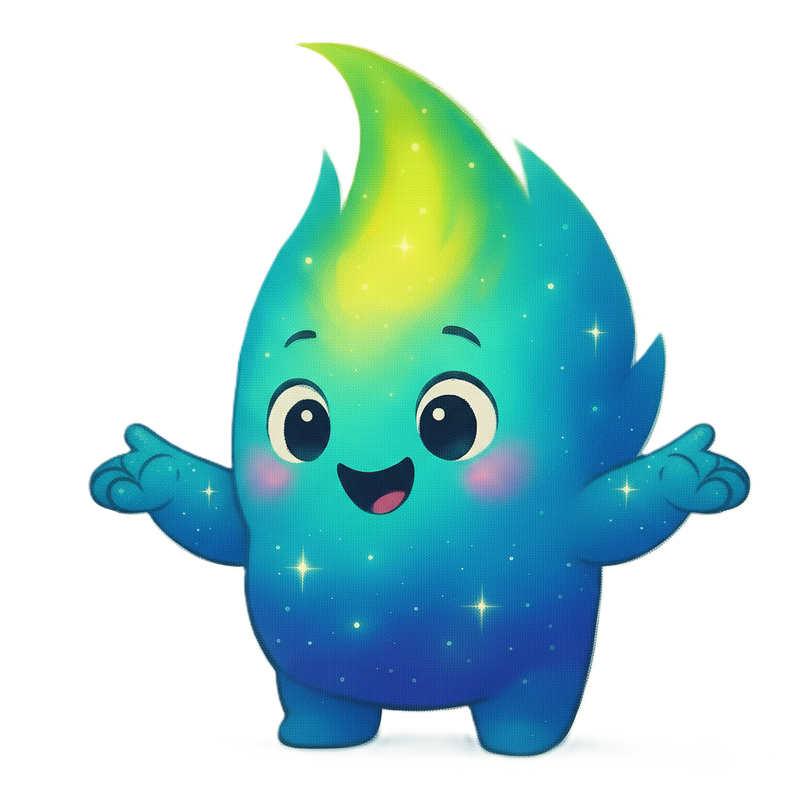
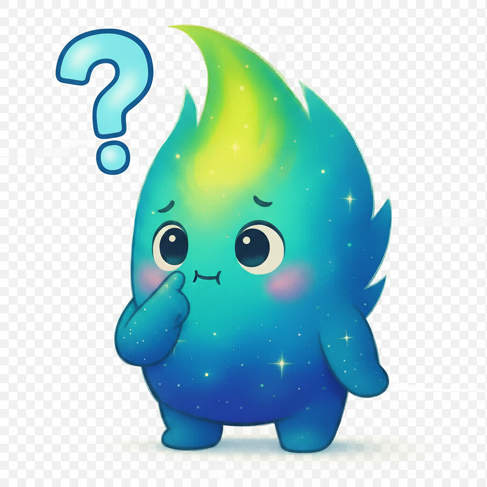
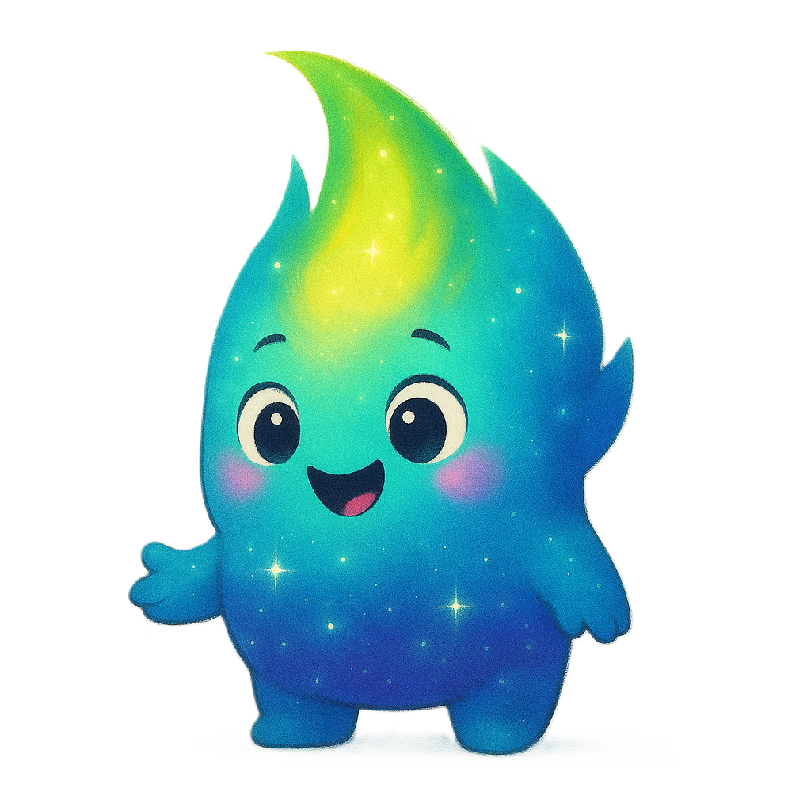
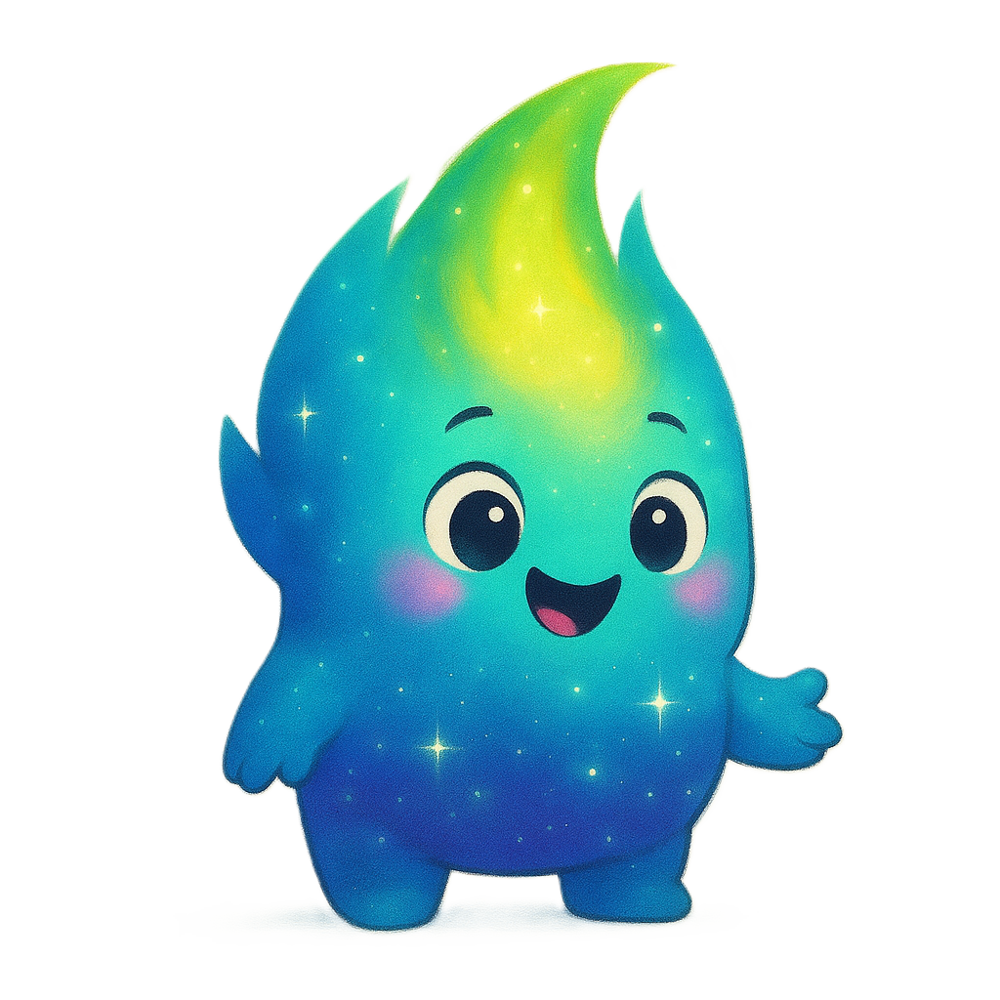

🌟 Aurelito - Guia Interativo
Conheça as funcionalidades do personagem guia do Stellar Stories!
🎭 Expressões do Aurelito
Aurelito possui 4 expressões diferentes que mudam conforme o contexto:

Explicação
Postura educativa

Dúvida
Expressão curiosa

Olhando à esquerda
Atenção lateral

Olhando à direita
Observando
💬 Mensagens Contextuais
Aurelito oferece mensagens diferentes para cada seção do site:
- Home: Boas-vindas e curiosidades sobre o Sol
- Histórias: Dicas sobre as narrativas disponíveis
- Sobre: Informações educativas sobre clima espacial
- Clima Espacial: Explicações sobre dados em tempo real
🎮 Funcionalidades Interativas
- Animação de flutuação suave
- Clique no personagem para mudar expressões
- Botão para minimizar/maximizar
- Mensagens rotativas a cada 15 segundos
- Detecção automática de mudança de seção
- Design responsivo para mobile e desktop
🔧 Como Funciona
O sistema usa Intersection Observer API para detectar quando o usuário muda de seção:
// Detecta automaticamente mudanças de seção
const sectionObserver = new IntersectionObserver();
// Atualiza mensagem do Aurelito baseado na seção
updateAurelitoMessage(currentSection);
📱 Responsividade
- Desktop: Personagem 150x150px, balão até 280px
- Mobile: Personagem 100x100px, balão até 200px
- Posicionamento otimizado para não atrapalhar conteúdo
- Animações suaves em todos os dispositivos
✨ Customização
Fácil de personalizar e expandir:
- Adicione novas mensagens editando o objeto
aurelitoMessages
- Inclua mais expressões adicionando imagens
- Ajuste intervalos de tempo de rotação
- Modifique cores e animações no CSS
🚀 Ver Aurelito em Ação
Desenvolvido para Stellar Stories - NASA Space Apps Challenge 🌌